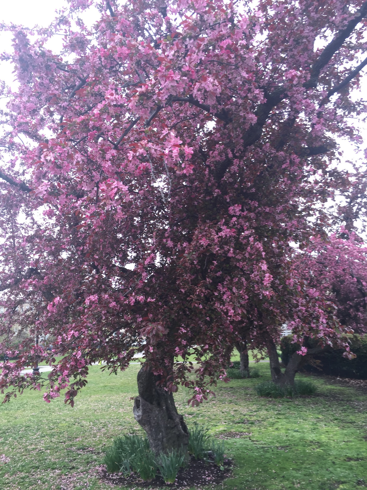

The Back Bay Fens
An Urban Adventure
The Back Bay Fens is a public park located in the Emerald Necklace Park system of Boston. I have had an apartment next to the Fens for four years. It is about time I got out and took some pictures of it. The goal of this site is to provide visitors with some basic park information, a map, and some photography of the park's key features. I shot everything in May 2016 with a basic iPhone six and no special lens or filter.
~Brendan
